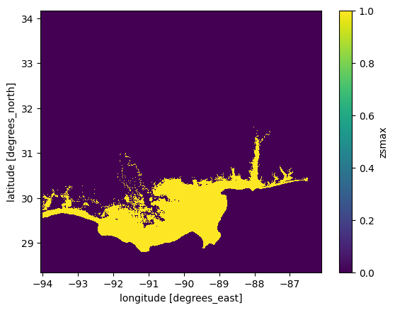
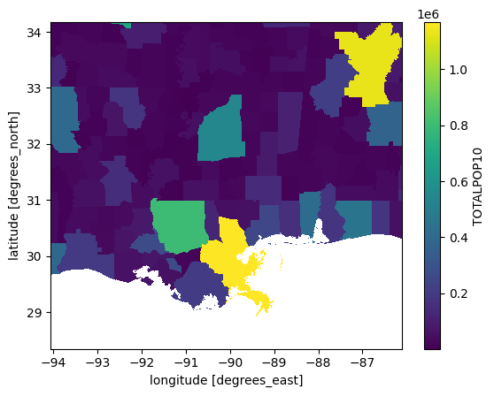
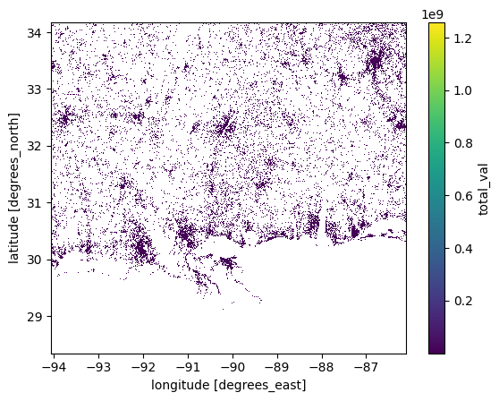
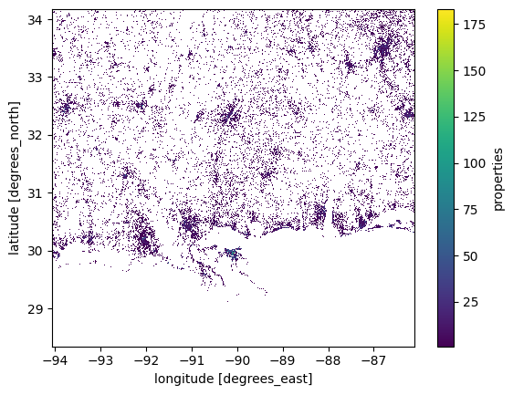
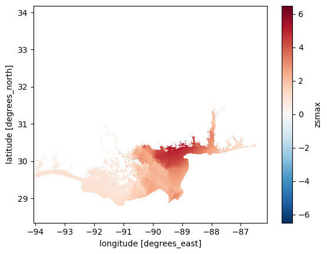

Lesson: hazard, vulnerability and exposure during Hurricane Katrina#
This workshop focuses on using vulnerability and exposure data to analyze the impacts of Hurricane Katrina on the city of New Orleans and its surroundings. This final workshop of the unit is the closest to a real-world climate risk analysis for a past extreme event—sometimes called a “hindcast”.
Note
This lesson is… quite dense. It introduces more advanced programming tools for overlaying vulnerability and exposure data with hazard data (in this case, a flood extent map). However, you don’t need to understand all of it. The assignment will only require you to copy and adapt small parts of this code.
We provide these advanced tools in the hope that they might be useful in your future work or in your dissertation.
Learning outcomes:
By the end of this workshop, you will:
have a good overview of the fundamental concepts of climate risk assessments, including hazard identification, exposure, and vulnerability.
learn how to use familiar and new Python libraries to process and analyze geospatial flood data.
create informative visualizations of flood extents and damage to interpret potential impacts effectively.
be able to integrate population datasets to estimate the number of individuals affected by varying hazard levels.
Copyright notice: Hamish Wilkinson ran the flood simulations, prepared all the data and exercises, and wrote an initial draft of this notebook. Fabien Maussion reviewed and streamlined it.
The flood data#
We use a simulation of the extent of the flood simulated by Hamish at Fathom using the open-source SFINCS model. This is the only dataset from this lecture which is not openly available online. While it would be possible for you to run such a simulation, this is more for a dissertation topic than a class workshop.
Animation of the flood: (to be discussed in class)

Python packages#
Let’s start by importing the packages. We have a new package this week!
#Import packages - these are not new
import os
import xarray as xr
import geopandas as gpd
import numpy as np
import pandas as pd
import matplotlib.pyplot as plt
# These are new
import rioxarray as rioxr # Open geotiffs with xarray
from rasterio.features import rasterize # Convert vector data to raster (optional)
---------------------------------------------------------------------------
ModuleNotFoundError Traceback (most recent call last)
Cell In[1], line 4
2 import os
3 import xarray as xr
----> 4 import geopandas as gpd
5 import numpy as np
6 import pandas as pd
ModuleNotFoundError: No module named 'geopandas'
Datasets#
Go to the download page to download all datasets at once. Extract the file in your data folder.
The data provided has been preprocessed to make it easier for you to use (mostly - cleaning out unnecessary variables, reprojecting, and cropping large datasets to the study region). However, if you are interested in the process (or indeed if it is helpful for your dissertation) the preprocessing scripts are also provided here (projection, cropping) and here (data reduction).
Note
For a ready-to-use, general solution to map population data onto ERA5 data for your project, see this recipe.
Hazard: SFINCS flood layers#
You will find 3 flood footprints data in the sfincs_simulations folder. We are going to work with the historic data for now, while the future scenarios will be used for your assignment. Let’s open the file:
# Select the historic event and examine it.
ds_hist = xr.open_dataset('../data/flood/sfincs_simulations/hindcast_sfincs_map.nc')
ds_hist
<xarray.Dataset> Size: 3GB
Dimensions: (x: 4031, y: 2955, timemax: 58)
Coordinates:
* x (x) float64 32kB -94.06 -94.06 -94.06 ... -86.12 -86.11 -86.11
* y (y) float64 24kB 34.17 34.17 34.17 34.17 ... 28.35 28.35 28.35
* timemax (timemax) datetime64[ns] 464B 2005-08-27T19:00:00 ... 2005-0...
Data variables:
inp int32 4B ...
crs int32 4B ...
sfincsgrid int32 4B ...
msk (y, x) float32 48MB ...
zb (y, x) float32 48MB ...
zsmax (timemax, y, x) float32 3GB ...
spatial_ref int32 4B ...
Attributes:
Conventions: Conventions = 'CF-1.6, SGRID-0.3
Build-Revision-Date-Netcdf-library: 4.8.1 of Sep 29 2021 09:36:14 $
Producer: SFINCS model: Super-Fast INundation ...
Build-Revision: $Rev: v2.0.3-Cauberg
Build-Date: $Date: 2023-11-15
title: SFINCS map netcdf outputE: Explore the file (variables, coordinates, attributes). Which of the variables are gridded variables? Which variable also has a time dimension?
We will now focus on zsmax variable for further analysis. Other variables are provided for documentation, if you are interested.
E: explore the zsmax variable. What is the units of the variable. Its “long name”, and “standard name”? Plot an image of the data for timestamp '2005-08-29 18:00' Hint: ds_hist.zsmax.sel(timemax='2005-08-29 18:00')
# Your answer here
zsmax is the simulated maximal flood depth for each timestamp. It represents the evolution of the flood depth above ground during the Hurricane.
Bonus: animate the data#
Note
The code below is “just for fun” - nothing quantitative happening there!
from matplotlib import animation
from IPython.display import HTML, display
# Create a figure and axes to plot on
fig, ax = plt.subplots()
# Coarsen the data by a factor of 10 in both x and y directions
# This reduces the resolution to make the animation computationally manageable
zsmax = ds_hist['zsmax'].coarsen(x=10, y=10, boundary="trim").mean()
# Plot the initial frame of the animation
cax = zsmax.isel(timemax=0).plot.imshow(ax=ax, # Use the predefined axes
add_colorbar=True, # Display a colorbar for reference
cmap='viridis', # Set the colormap to 'viridis'
vmin=0, vmax=zsmax.max() # Define color scale limits
)
ax.axis('equal') # Ensure aspect ratio is maintained
# Define the animation function, which updates the frame at each timestep
def animate(frame):
# Update the title with the current time (formatted as YYYY-MM-DD HH:mm)
ax.set_title(f'Time: {pd.to_datetime(str(zsmax.timemax.data[frame])).strftime("%Y-%m-%d %H:%M")}')
# Update the color array with the new frame's data
cax.set_array(zsmax.values[frame, :])
# Create the animation object
ani_glacier = animation.FuncAnimation(fig, animate, frames=len(zsmax.timemax), interval=100)
# Close the figure to prevent it from displaying in the cell output
plt.close(fig)
# Display the animation as an interactive HTML object
HTML(ani_glacier.to_jshtml())
---------------------------------------------------------------------------
NameError Traceback (most recent call last)
Cell In[4], line 5
2 from IPython.display import HTML, display
4 # Create a figure and axes to plot on
----> 5 fig, ax = plt.subplots()
7 # Coarsen the data by a factor of 10 in both x and y directions
8 # This reduces the resolution to make the animation computationally manageable
9 zsmax = ds_hist['zsmax'].coarsen(x=10, y=10, boundary="trim").mean()
NameError: name 'plt' is not defined
Max flood extent#
The time dimension of the flood is interesting to better grasp what the data represents. It’s also useful to understand the processes behind the flood and, if these were actual forecasts (and not hindcasts), these could provide tools for rescue services.
For flood damage analysis, however, we are typically interested in the maximal flood footprint (the extent of the maximum flood) and the maximal flood depth (the maximal amount of water experienced by infrastructure and populations), regardless of the time at which it occurs.
So lets compute this variable:
max_flood_depth = ds_hist.zsmax.max(dim="timemax")
# Plot it
max_flood_depth.plot.imshow(); # Note the use of imshow() instead of .plot() - this is to speedup the plot
You may have noticed that plotting this data took a little while longer than you are used to. This is because this data is at a higher resolution than the climate data we have worked with so far. The data is still in lat/lon.
E: What is the spatial resolution in lat/lon? Can you convert this to meters?
# Your answer here
The plot above shows us max water depth above the reference (in this case, the elevation model used in the simulation).
While depth information is useful for a whole host of reasons (we will look into depth damage curves later), to start with we are going to keep it simple and work off the flood extent first:
max_flood_extent = ~ max_flood_depth.isnull()
max_flood_extent.plot.imshow();

Q: What is the line of code ~ max_flood_depth.isnull() doing? Have a look at both the plots and the data if you are not sure, and try with and without the ~.
#Your answer here
Bonus: plot the data on a georeferenced map#
Note
The code below is giving you tools to plot regional data on a map, should you want to do it in your dissertation.
The plot above may be quite difficult to understand without coastlines, etc. Here is a code snipped for you to use if you want prettier plots:
import cartopy.crs as ccrs
import cartopy.feature as cfeature
# Create figure and axis with UTM projection
fig, ax = plt.subplots(subplot_kw={'projection': ccrs.Mercator()})
# Plot the max flood depth
max_flood_depth.plot(ax=ax,
transform=ccrs.PlateCarree(), # Data is in lat/lon, so we need to transform it
cmap='Reds', # Optional: Adjust colormap
vmin=0,
add_colorbar=True)
# Get dataset coordinate bounds for setting extent
lon_min, lon_max = max_flood_depth.x.min(), max_flood_depth.x.max()
lat_min, lat_max = max_flood_depth.y.min(), max_flood_depth.y.max()
# Set extent dynamically based on dataset bounds
ax.set_extent([lon_min, lon_max, lat_min, lat_max], crs=ccrs.PlateCarree())
# Add Cartopy features: coastlines, U.S. states, and rivers
ax.coastlines()
ax.add_feature(cfeature.STATES, linestyle='-', edgecolor='black')
ax.add_feature(cfeature.BORDERS, linestyle=':', edgecolor='gray') # Country borders
ax.add_feature(cfeature.RIVERS, edgecolor='blue', alpha=0.5) # Adds major rivers
# Add gridlines (optional)
# gl = ax.gridlines(draw_labels=True, linestyle="--", alpha=0.5)
# gl.right_labels = False
# gl.top_labels = False
plt.title('Max flood depth');
---------------------------------------------------------------------------
ModuleNotFoundError Traceback (most recent call last)
Cell In[9], line 1
----> 1 import cartopy.crs as ccrs
2 import cartopy.feature as cfeature
4 # Create figure and axis with UTM projection
ModuleNotFoundError: No module named 'cartopy'
Summary: SFINCS data#
We have a map of maximum flood depth and flood extent. These maps are generated using a numerical model, which is typically validated to ensure it represents real-world conditions accurately. In this case, these simulations have been run specifically for this workshop — let’s just say that these maps are “close enough” for our purposes today.
Using this flood extent, we can perform “hit” analyses on population and economic data. To simplify your work, we have preprocessed population and economic data for you by cropping it to match the flood simulation map and arranging it for easier interpretation.
If you’re interested, you can check out the preprocessing script and the raw data. Unfortunately, the preprocessing is a bit complex — as we’ve already mentioned, real-world data is rarely as clean or structured as we’d like it to be.
Exposure: Present-day population data#
One of the simpliest ways to analyse the impact of a flood is to perform a simple intersection of a population map with flood extent and exposure datasets.
Let’s read in a population dataset to do just that:
# Here we read in population data
worldpop_hist = rioxr.open_rasterio("../data/flood/population/cropped_usa_ppp_2020_constrained.tif", masked=True)
worldpop_hist = worldpop_hist.squeeze() # Get rid of unneeded band dimension
worldpop_hist
---------------------------------------------------------------------------
NameError Traceback (most recent call last)
Cell In[10], line 2
1 # Here we read in population data
----> 2 worldpop_hist = rioxr.open_rasterio("../data/flood/population/cropped_usa_ppp_2020_constrained.tif", masked=True)
3 worldpop_hist = worldpop_hist.squeeze() # Get rid of unneeded band dimension
4 worldpop_hist
NameError: name 'rioxr' is not defined
You may have noticed that the WorldPop data file has a different file suffix than other data we have worked with. This is because it is a GeoTIFF. A GeoTiff is essentially an image that is georeferenced to a specific location (and coordinate system) on Earth. In this way, it is somewhat similar to a NetCDF file, as both formats store spatial data. However, GeoTiffs are typically less complex than NetCDFs. They often contain only a single variable (referred to as a “band” in GeoTiffs), whereas NetCDF files can store multiple variables, dimensions, and metadata.
Conveniently, xarray can work with GeoTiffs, allowing us to read and manipulate the data in much the same way as a NetCDF file. The key difference is that we read it in as a DataArray using rasterIO rather than a Dataset, since it contains only a single variable.
For all other purposes, once read, the data should look familiar to you:
worldpop_hist.plot.imshow();
---------------------------------------------------------------------------
NameError Traceback (most recent call last)
Cell In[11], line 1
----> 1 worldpop_hist.plot.imshow();
NameError: name 'worldpop_hist' is not defined
You can see from the above plot that WorldPop shows the spatial distribution of population. In essence this is a process of disaggregation. WorldPop has taken information on population from sources such as censuses and disagregatted this to areas where is algorithms consider it most likely that people will live. This is a goldmine for impact analysis, as it allows us a much more granular picture of risk.
Exposure: Projections of population data#
Lets consider another population dataset - in this case a projection of future population under two SSP scenarios.
# Open and examine the data
pop_proj = xr.open_dataset("../data/flood/population/cropped_ICLUS_v2_1_1_population_stripped.nc")
pop_proj
<xarray.Dataset> Size: 238MB
Dimensions: (y: 2955, x: 4031)
Coordinates:
* y (y) float64 24kB 34.17 34.17 ... 28.35 28.35
* x (x) float64 32kB -94.06 -94.06 ... -86.11 -86.11
Data variables:
TOTALPOP10 (y, x) float32 48MB ...
hadgem2_es_ssp5_rcp85_2080 (y, x) float32 48MB ...
hadgem2_es_ssp2_rcp45_2080 (y, x) float32 48MB ...
ssp585_scaler (y, x) float32 48MB ...
ssp245_scaler (y, x) float32 48MB ...# Plot to get and idea of the spatial distribution.
pop_proj["TOTALPOP10"].plot.imshow();

This first thing you will probably notice is that the spatial layout of this data appears both more complete, and more discrete than the SFINCS and WorldPop data we have looked at so far. This is because this data is much coarser - it shows the total population of adminstrative regions, and the total projected population under future SSP scenarios. However, it makes no effort to disaggregate this information like WorldPop. In fact it originally was in vector format. I have converted it to NetCDF here so you can easily use it for analysis later in your assignment. If you want to have a look at the original data it is in the raw data folder.
Q: Have a look at the other variables. We have population in 2010, and population in 2080 under the two SSPs. What do you think the scaler is? Why might this be useful when combined with a more granular dataset such as WorldPop?
# Your answer here
Exposure : Economic assets#
So far we have conecentrated on population, which is of course is a large aspect of what we consider in impact studies. However, another important aspect is the cost of economic damages in relation to flooding. We can estimate this using the National Structures Inventory (NSI), a US dataset which lists a value for each property. Let’s open the file:
nsi = xr.open_dataset("../data/flood/demographics/cropped_NSI.nc")
nsi
<xarray.Dataset> Size: 95MB
Dimensions: (y: 2955, x: 4031)
Coordinates:
* y (y) float64 24kB 34.17 34.17 34.17 34.17 ... 28.35 28.35 28.35
* x (x) float64 32kB -94.06 -94.06 -94.06 ... -86.12 -86.11 -86.11
Data variables:
total_val (y, x) float32 48MB ...
properties (y, x) float32 48MB ...Unfortunately the data variables have no units or metadata. We’ll have to find out what’s in it by ourselves:
nsi.total_val.plot.imshow(); # This shows the aggregate value of housing in each gridcell - in $

nsi.properties.plot.imshow(); # This shows the total number of properties in each cell

Examining these datasets, you will notice that they have a similar granularity to the WorldPop data. In fact, you might assume they were originally raster datasets. However, that is not the case—these datasets were originally vector data, specifically point-based rather than polygon-based.
If you’re curious about the conversion process, you are encouraged to check out the preprocessing script.
Vunerability: deprivation index#
The Area Deprivation Index (ADI) is a deprivation index for the USA. It was originally in csv format. I combined it with a census polygon vector dataset to make it spatial. For full detail see the preprocessing script.
We provide ADI as a gpkg, which is short for GeoPackage. It’s very much like the shapefiles you analysed in the glacier workshop, but in a more open format (and without the drawback of having multiple files).
gpkg are opened with GeoPandas like shapefiles:
df_adi = gpd.read_file("../data/flood/demographics/cropped_US_2022_ADI_Census_Block_Group_v4_0_1.gpkg")
df_adi.head()
---------------------------------------------------------------------------
NameError Traceback (most recent call last)
Cell In[18], line 1
----> 1 df_adi = gpd.read_file("../data/flood/demographics/cropped_US_2022_ADI_Census_Block_Group_v4_0_1.gpkg")
2 df_adi.head()
NameError: name 'gpd' is not defined
Note that ADI_NATRANK is the national score of deprivation, and ADI_STATERNK is specific to that state. We are working across state lines, so it would be best to use the national rank in our analysis:
df_adi.plot(column="ADI_NATRANK", cmap="RdYlGn_r", legend=True); # this is vector data (not raster)
---------------------------------------------------------------------------
NameError Traceback (most recent call last)
Cell In[19], line 1
----> 1 df_adi.plot(column="ADI_NATRANK", cmap="RdYlGn_r", legend=True); # this is vector data (not raster)
NameError: name 'df_adi' is not defined
Note that we have reversed the colour bar _r). That is because zero is least deprived, while red is most deprived. You can find more information on this in the README file provided in the data folder.
Q: What spatial patterns jump out at you? How do you think this might translate to flood risk vunerability? Further, there are some white spaces - why is this data missing? Hint: The readme may help you here
# Your answer here.
Rasterisation of vector data#
ADI data is provided in vector format - more specifically a polygons geodataframe. While we can use this with xarray data using intersections and rioxarray, it is not very computationally efficent. Instead, lets rasterise it.
Arguably this could have been part of our preprocessing step - but we decided to let you have a go at it yourselves, so you know it’s (relatively) easy to do.
The key points in the below code is that we are taking the polygon geometry, and everywhere this touches we are burning the value held within the ADI_NATRANK column into the pixels of the spatially underlying grid.
To get this grid we use a template that we want to compare it to. In this case WorldPop. The shape gives the columns and rows of the template:
# This code converts the polygons we have to the same grid that our other data is in. This allows pixel by pixel comparisions.
adi = rasterize(
shapes=zip(df_adi.geometry, df_adi["ADI_NATRANK"]), # Burn the column values using vector geometry.
out_shape=worldpop_hist.rio.shape, # Shape (rows/columns) of the output raster from our template (WorldPop)
transform=worldpop_hist.rio.transform(), # Affine transform from the template raster (Don't worry about this too much).
fill=np.nan, # Background value (non numeric so we dont screw calcs)
all_touched=True, # Include all pixels touched by geometries
dtype=np.float32 # Data type of the output raster
)
# Transform to xarray.
adi = xr.DataArray(adi, dims=("y", "x"), coords={"y": worldpop_hist.y, "x": worldpop_hist.x})
# Lets make sure our data looks as we would expect.
adi.plot.imshow();
---------------------------------------------------------------------------
NameError Traceback (most recent call last)
Cell In[21], line 2
1 # This code converts the polygons we have to the same grid that our other data is in. This allows pixel by pixel comparisions.
----> 2 adi = rasterize(
3 shapes=zip(df_adi.geometry, df_adi["ADI_NATRANK"]), # Burn the column values using vector geometry.
4 out_shape=worldpop_hist.rio.shape, # Shape (rows/columns) of the output raster from our template (WorldPop)
5 transform=worldpop_hist.rio.transform(), # Affine transform from the template raster (Don't worry about this too much).
6 fill=np.nan, # Background value (non numeric so we dont screw calcs)
7 all_touched=True, # Include all pixels touched by geometries
8 dtype=np.float32 # Data type of the output raster
9 )
11 # Transform to xarray.
12 adi = xr.DataArray(adi, dims=("y", "x"), coords={"y": worldpop_hist.y, "x": worldpop_hist.x})
NameError: name 'rasterize' is not defined
NB we have some missing data. If we were feeling clever we could interpolate over the gaps. For this exercise we will just leave them blank - they will be exclude from our analysis as they are np.nan.
E: verify that max_flood_extent, max_flood_depth, worldpop, adi all have the same dimensions. This is often a prerequisite for many data analysis pipelines - the data needs to be homogenised, normally on a common grid.
# Your answer here
Vulnerability ranks#
Finally, we note that the categories for vulnerability are very fine:
np.unique(adi)
---------------------------------------------------------------------------
NameError Traceback (most recent call last)
Cell In[23], line 1
----> 1 np.unique(adi)
NameError: name 'np' is not defined
That is perhaps too fine for our liking. Let’s coarsen and round to the nearest 10. We are going to use a simple trick to convert these into increments of 10:
# Rounds each value in 'adi' to the nearest multiple of 10
adi.data = np.round(adi / 10) * 10
---------------------------------------------------------------------------
NameError Traceback (most recent call last)
Cell In[24], line 2
1 # Rounds each value in 'adi' to the nearest multiple of 10
----> 2 adi.data = np.round(adi / 10) * 10
NameError: name 'np' is not defined
This is now categorized in simpler ranks:
np.unique(adi)
---------------------------------------------------------------------------
NameError Traceback (most recent call last)
Cell In[25], line 1
----> 1 np.unique(adi)
NameError: name 'np' is not defined
adi.plot.imshow();
---------------------------------------------------------------------------
NameError Traceback (most recent call last)
Cell In[26], line 1
----> 1 adi.plot.imshow();
NameError: name 'adi' is not defined
Same data - coarser categories!
The Flood Risk Analysis – Finally!#
We have now read in all our data. More importantly, we have visualized and explored it, giving us a reasonable understanding of the data we are working with — its structure, characteristics, and potential shortcomings.
Note that I say “reasonable” — perhaps “superficial” would be a more accurate description. In general, I strongly recommend reading research papers about a dataset before using it. This helps you better understand the assumptions and compromises made during its generation process.
That said, we now know enough to move forward — so let’s dive into some analysis!
Flood extent#
For the purpose of this exercise, let’s assume that each grid point has an approximate area of 0.036 km\(^2\).
E: compute the total area (in km\(^2\)) of the flood (using max_flood_extent) and the pixel area given above. Compare this to the area of the UK.
# Your answer here
Population exposure#
First lets look at the numbers of people effected by flooding according to WorldPop.
Exposure by flood extent#
We start by asking a simple question: how many people where impacted by the flood?
# This uses the extent mask we made earlier to keep only WorldPop values impacted by flooding.
flooded_worldpop = worldpop_hist.where(max_flood_extent)
# This shows us where - on the coast as expected. I always find it worth
# plotting data to make sure the code is doing what I am expecting:
flooded_worldpop.plot.imshow();
---------------------------------------------------------------------------
NameError Traceback (most recent call last)
Cell In[28], line 2
1 # This uses the extent mask we made earlier to keep only WorldPop values impacted by flooding.
----> 2 flooded_worldpop = worldpop_hist.where(max_flood_extent)
4 # This shows us where - on the coast as expected. I always find it worth
5 # plotting data to make sure the code is doing what I am expecting:
6 flooded_worldpop.plot.imshow();
NameError: name 'worldpop_hist' is not defined
Q: What does worldpop.where(max_flood_extent) achieve? If you can’t figure it out, plot the worldpop and max_flood_extent separately, and then the outcome (flooded_worldpop).
# Your answer here
NB - if you wanted to make plots for including in a report or dissertation you might want to include mapping elements, or even just outlines of coast and states to give the reader more context. Here though we are engaged in prelimary analysis - we can tidy up plots later if we need to. See the example above on how to do that.
E: some quantitative analysis now! Answer the following questions:
what is the higher population value in a flooded cell?
what is the total number of people affected by the flood?
compare this number with estimates of people displaced or left homeless by the flood (web search). Does it (roughly) add up?
# Your answer here
Exposure by flood depth categories#
The full number of people is an important analysis - but flooding is not happening equally everywhere. What if we wanted to know how many people are affected by different levels of flooding?
This can be done by a proccess called binning - very similar to histograms: we want to create categories (e.g. <0.5 m flooding, between 0.5 and 1.5, etc.) and then figure out the extent of the flood for each category, and then figure out how many people are affected by each category. Does that make sense? Let’s prepare our bins first:
# Create bins
bins = [0, 0.5, 1.5, 2.5, 3.5, 4.5, 5.5, np.max(max_flood_depth).item()]
print(bins)
---------------------------------------------------------------------------
NameError Traceback (most recent call last)
Cell In[31], line 2
1 # Create bins
----> 2 bins = [0, 0.5, 1.5, 2.5, 3.5, 4.5, 5.5, np.max(max_flood_depth).item()]
3 print(bins)
NameError: name 'np' is not defined
Next, we will use np.digitize to classify our flood depth into categories. We want to work with xarray still (digitize is a numpy function), so we’ll just ask xarray to apply np.digitize to our data:
categories = max_flood_depth.copy() # Just create a container for the data
categories.data = np.digitize(max_flood_depth, bins, right=True) # Categorize
---------------------------------------------------------------------------
NameError Traceback (most recent call last)
Cell In[32], line 2
1 categories = max_flood_depth.copy() # Just create a container for the data
----> 2 categories.data = np.digitize(max_flood_depth, bins, right=True) # Categorize
NameError: name 'np' is not defined
Let’s have a look at our data:
categories.plot.imshow();
We have 9 categories:
0 (< 0m flood depth)
1 (0–0.5m flood depth)
…
7 (> 5.5m flood depth)
8 (missing values)
Let’s rearrange the data so that 0 represents “no flood,” while the remaining values correspond to different flood depth categories.
flood_category_map = categories.where(categories != categories.max(), 0) # Replace category 9 with 0
flood_category_map.plot.imshow();

Now that’s very useful. We now have a categorical map of the flood severity (note that category 1, <0.5m, is already quite severe!).
We can use this information to find out how many people where affected by the categories 3 and above. Let’s go:
# Similar to masking above - but this time we have a smaller extent for all categories > 3
flooded_cat3_and_above = worldpop_hist.where(flood_category_map >= 3)
---------------------------------------------------------------------------
NameError Traceback (most recent call last)
Cell In[35], line 2
1 # Similar to masking above - but this time we have a smaller extent for all categories > 3
----> 2 flooded_cat3_and_above = worldpop_hist.where(flood_category_map >= 3)
NameError: name 'worldpop_hist' is not defined
E: plot the flooded_cat3_and_above variable. Now compute the total number of people affected by these categories, as a total number and as a percentage of the total number of people affected by the flood (any category). Now repeat with category 6 and above.
# Your answer here
Good - that looks about like we expect: a smaller amount of people with each increase in flood depth.
With this information we can now check out the split of people effected by different depths of flooding. Let us write this code for you:
# First lets create a dataframe to store our results
impacts_df = pd.DataFrame()
# Now lets loop over our extents to pull out effected pop
for cat in sorted(np.unique(flood_category_map)):
# This is a bit of ugly code to add a legend to the categories
# dont worry too much about it
if cat == 0:
continue # We dont care about this category
elif cat == 1:
depth = f'0-{bins[cat]}m'
elif cat == flood_category_map.max():
depth = f'>={bins[cat-1]}m'
else:
depth = f'{bins[cat-1]}-{bins[cat]}m'
impacts_df.loc[cat, 'Depth'] = depth
# Masking as we did before with an extent.
pop_affected = worldpop_hist.where(flood_category_map == cat).sum().item()
# Also compute the area
area_affected = (flood_category_map == cat).sum().item()
# Store the data
impacts_df.loc[cat, 'Pop_affected'] = pop_affected
impacts_df.loc[cat, 'Area_affected'] = area_affected
# Lets have a look
impacts_df
---------------------------------------------------------------------------
NameError Traceback (most recent call last)
Cell In[37], line 2
1 # First lets create a dataframe to store our results
----> 2 impacts_df = pd.DataFrame()
4 # Now lets loop over our extents to pull out effected pop
5 for cat in sorted(np.unique(flood_category_map)):
6
7 # This is a bit of ugly code to add a legend to the categories
8 # dont worry too much about it
NameError: name 'pd' is not defined
I note we still have fractions of people. It takes away from our analysis a bit. Lets round them out and create a nice visual representation of our depth exposure profile.
impacts_df["Pop_affected"] = impacts_df["Pop_affected"].astype(int)
impacts_df.plot(kind="bar", x="Depth", y="Pop_affected"); # Again we can make a prettier plot than this!
---------------------------------------------------------------------------
NameError Traceback (most recent call last)
Cell In[38], line 1
----> 1 impacts_df["Pop_affected"] = impacts_df["Pop_affected"].astype(int)
3 impacts_df.plot(kind="bar", x="Depth", y="Pop_affected"); # Again we can make a prettier plot than this!
NameError: name 'impacts_df' is not defined
impacts_df.plot(kind="bar", x="Depth", y="Area_affected"); # Again we can make a prettier plot than this!
---------------------------------------------------------------------------
NameError Traceback (most recent call last)
Cell In[39], line 1
----> 1 impacts_df.plot(kind="bar", x="Depth", y="Area_affected"); # Again we can make a prettier plot than this!
NameError: name 'impacts_df' is not defined
Q: analyse and interpret the plots above. How does area correlate to population affected?
# Your answer here
Vulnerability#
Now that we have estimated the number of people affected, we can expand our analysis. How vulnerable are the affected populations? And how is the risk distributed demographically?
There are several ways to approach this analysis. Here, we address one research question:
For a given flood depth category, what proportion of deprived areas is affected?
Let’s start simple first: Within the flood extent (regardless of depth), what is the socioeconomic distribution of the affected population? To answer this, we need to overlay the population map with the flood extent and then determine which socioeconomic category each affected population belongs to:
# Start by masking population data according to flood extent
affected_pop = worldpop_hist.where(max_flood_extent)
# Then create two new masks: for high and low deprivation areas
affected_pop_high_deprivation = affected_pop.where(adi >= 60)
affected_pop_low_deprivation = affected_pop.where(adi < 60)
---------------------------------------------------------------------------
NameError Traceback (most recent call last)
Cell In[41], line 2
1 # Start by masking population data according to flood extent
----> 2 affected_pop = worldpop_hist.where(max_flood_extent)
4 # Then create two new masks: for high and low deprivation areas
5 affected_pop_high_deprivation = affected_pop.where(adi >= 60)
NameError: name 'worldpop_hist' is not defined
E: plot the two maps (affected high and low deprivation). Now count the number of people affected for each deprivation category. Did the flood affect more people in depraved or in less depraved areas? What is the ratio between the two values?
# Your answer here
Now let’s redo this analysis but with another flood category - for example > 1.5 m (cat 3 and above):
# Start by masking population data according to flood extent
affected_pop_cat3 = worldpop_hist.where(flood_category_map >= 3)
# Then create two new masks: for high and low deprivation areas
affected_pop_cat3_high_deprivation = affected_pop_cat3.where(adi >= 60)
affected_pop_cat3_low_deprivation = affected_pop_cat3.where(adi < 60)
---------------------------------------------------------------------------
NameError Traceback (most recent call last)
Cell In[43], line 2
1 # Start by masking population data according to flood extent
----> 2 affected_pop_cat3 = worldpop_hist.where(flood_category_map >= 3)
4 # Then create two new masks: for high and low deprivation areas
5 affected_pop_cat3_high_deprivation = affected_pop_cat3.where(adi >= 60)
NameError: name 'worldpop_hist' is not defined
E: count the number of people affected for each deprivation category, this time in the flood category 3. Did the flood affect more people in depraved or in less depraved areas? What is the ratio between the two values? Compare this ratio with the entire flood area computed above. Hint: this doesnt change much
# Your answer here
Note that this does not mean that deprived areas are more likely to be flooded. Addressing this research question properly is not trivial with the data available to us—we would need even more fine-grained data to answer it accurately.
Instead, this analysis serves as a diagnostic tool to quantify the extent of the damage and assess its impact on different populations.
Bonus: stacked bar plots#
The analysis above was done on an ad-hoc basis - defining thresholds for low and high deprivations, and for single categories of flood depth. We can generalise this analysis by looping over all flood depth and vulnerability categories.
Let’s start by reminding us of our depth categories:
flood_categories = impacts_df.index
flood_categories
---------------------------------------------------------------------------
NameError Traceback (most recent call last)
Cell In[45], line 1
----> 1 flood_categories = impacts_df.index
2 flood_categories
NameError: name 'impacts_df' is not defined
And we also have deprivation categories:
# List our vunerability ranks
vun_ranks = np.unique(adi)
# Remove NaN values
vun_ranks = vun_ranks[~np.isnan(vun_ranks)]
vun_ranks
---------------------------------------------------------------------------
NameError Traceback (most recent call last)
Cell In[46], line 2
1 # List our vunerability ranks
----> 2 vun_ranks = np.unique(adi)
3 # Remove NaN values
4 vun_ranks = vun_ranks[~np.isnan(vun_ranks)]
NameError: name 'np' is not defined
OK so we have 7 depth categories and 11 deprivation categories. Now we are going to loop over all of them in a nested loop: the outer loop for depth, the inner loop for vulnerability:
# Create a data container
vun_df = pd.DataFrame()
i = 0 # Just the index
# First we loop over our depth extents from earlier
for cat, depth in zip(flood_categories, impacts_df['Depth']):
# Isolate the areas effected by this flood depth
affected_pop_cat = worldpop_hist.where(flood_category_map == cat)
# Now we loop over our vunerability ranks for that specfic flood depth extent.
for vun_rank in vun_ranks:
# Same as above - isolate the population data for this rank
affected_pop_rank = affected_pop_cat.where(adi == vun_rank)
# Store the data we have just harvested in the dataframe
vun_df.loc[i, 'depth'] = depth
vun_df.loc[i, 'vun_rank'] = vun_rank
vun_df.loc[i, 'pop'] = affected_pop_rank.sum().item()
# Update counter
i += 1
# Have a look
vun_df
---------------------------------------------------------------------------
NameError Traceback (most recent call last)
Cell In[47], line 2
1 # Create a data container
----> 2 vun_df = pd.DataFrame()
4 i = 0 # Just the index
6 # First we loop over our depth extents from earlier
NameError: name 'pd' is not defined
Quick segway here on nested loops. If you are still struggling to get your head around it, perhaps this will help:
outer = [1,2]
inner = ["cat", "dog", "hamster"]
for i in range(len(outer)):
print("This is OUTER loop " + str(i+1))
for j in range(len(inner)):
print("This is inner loop " + str(j+1) + ". Value is " + inner[j] + ".")
This is OUTER loop 1
This is inner loop 1. Value is cat.
This is inner loop 2. Value is dog.
This is inner loop 3. Value is hamster.
This is OUTER loop 2
This is inner loop 1. Value is cat.
This is inner loop 2. Value is dog.
This is inner loop 3. Value is hamster.
As you can see for each iteration of the outer loop, in the inner loop completes its full loop. Let us know if this is still confusing.
Back to our analysis of flood vunerabilty. From the dataframe we can see we have the number of people in each vunerability rank for each flood extent, but its not in a clearly readable format. Lets graph it up using a stacked barchart.
vun_df_stack = vun_df.groupby(["depth", "vun_rank"])["pop"].sum().unstack()
vun_df_stack.plot(kind="bar", stacked=True, colormap="RdYlGn_r");
---------------------------------------------------------------------------
NameError Traceback (most recent call last)
Cell In[49], line 1
----> 1 vun_df_stack = vun_df.groupby(["depth", "vun_rank"])["pop"].sum().unstack()
2 vun_df_stack.plot(kind="bar", stacked=True, colormap="RdYlGn_r");
NameError: name 'vun_df' is not defined
Economics#
Having focused on people and deprivation, I hear you crying “Won’t anyone think about the money?!” Lets use our total flood extent and the NSI layer to find our just how much Katrina costs according to our analysis.
# .where() also works with datasets!
econ_dmg = nsi.where(max_flood_extent)
total_cost = econ_dmg["total_val"].sum().item()
number_prop = econ_dmg["properties"].sum().item()
f'{number_prop:.0f} prperties where affected, for a total damage of {total_cost*1e-9:.0f} billion $'
'582513 prperties where affected, for a total damage of 308 billion $'
The damage from this event is a little off though - Katrina cost 201.3 billion (says google).
We might be off for a few reasons - Q: write a few thoughts about the approximations in our analyses below.
#Your answer here.
Part of the reason why, is that a building and all its contents does not evaporate as soon as water touches it. Damage occurs on a spectrum, illustrated by damage curves. We won’t go into detail here, but in essence, the deeper the water the higher % value of damage. Lets illustrate this with a simple relationship - lets say above 4m is total destruction (probably about right..) and scale that linearly (very unrealistic) from 0 (no damage). Let’s add a damage curve to our flood categories:
impacts_df['Dmg_rate'] = np.append(np.linspace(0.2, 1.0, 5), [1, 1])
impacts_df
---------------------------------------------------------------------------
NameError Traceback (most recent call last)
Cell In[52], line 1
----> 1 impacts_df['Dmg_rate'] = np.append(np.linspace(0.2, 1.0, 5), [1, 1])
2 impacts_df
NameError: name 'np' is not defined
# Loop over our damage curve
for cat in impacts_df.index:
# Isolate the areas effected by flood depth
econ_dmg = nsi['total_val'].where(flood_category_map == cat)
# Total damage (no adjustment)
impacts_df.loc[cat, 'Damage'] = econ_dmg.sum().item() * 1e-9
# Apply adjustment for damage rate
impacts_df['Damage_adjusted'] = impacts_df['Damage'] * impacts_df['Dmg_rate']
# Print out
impacts_df
---------------------------------------------------------------------------
NameError Traceback (most recent call last)
Cell In[53], line 2
1 # Loop over our damage curve
----> 2 for cat in impacts_df.index:
3
4 # Isolate the areas effected by flood depth
5 econ_dmg = nsi['total_val'].where(flood_category_map == cat)
7 # Total damage (no adjustment)
NameError: name 'impacts_df' is not defined
Now the total damage is:
impacts_df.sum()[['Damage', 'Damage_adjusted']]
---------------------------------------------------------------------------
NameError Traceback (most recent call last)
Cell In[54], line 1
----> 1 impacts_df.sum()[['Damage', 'Damage_adjusted']]
NameError: name 'impacts_df' is not defined
This is much better - but it is probably very much just by chance!
This illustrates the difficulty pricing insurance. Getting the damage curve just right is complex, and relies on information on structure type amonst others. Salinity also makes a difference. Added to that the NSI dataset has been updated since 2005, and so is likely not representative of conditions during Katrina.
Again, lets have a look at the damage curve we have created:
impacts_df.plot(x='Depth', y='Dmg_rate');
---------------------------------------------------------------------------
NameError Traceback (most recent call last)
Cell In[55], line 1
----> 1 impacts_df.plot(x='Depth', y='Dmg_rate');
NameError: name 'impacts_df' is not defined
Lets compare that to a curve plot I pinched from some of my colleagues:

Wing, O.E.J., Pinter, N., Bates, P.D. et al. New insights into US flood vulnerability revealed from flood insurance big data. Nat Commun 11, 1444 (2020). https://doi.org/10.1038/s41467-020-15264-2
As you can see, pricing risk is an uncertain business - even in the present day.
Conclusion#
This workshop equipped you with practical skills to analyze and interpret spatial risk data (here: flood, but it could be another risk as well).
You are encouraged to view this lesson as a resource for your future endeavors. While the number of analyses may seem daunting, you can learn at your own pace and return to this resource when necessary.